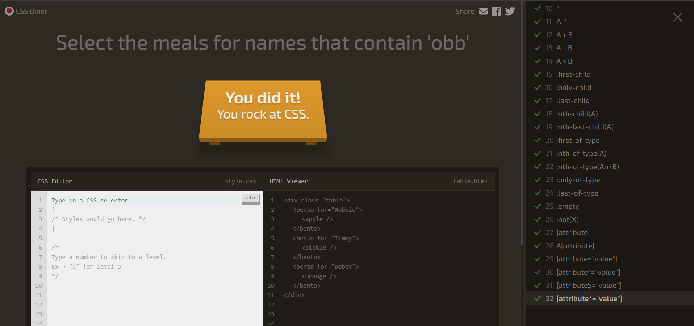

O CSS Diner é um jogo educativo gratuito para aprender seletores CSS de forma interativa. Eu completei todas as suas fases, verifique abaixo:

A fase 15 consiste em selecionar a laranja do topo.

orange seleciona os elementos < orange >.
:first-child seleciona um elemento que é o primeiro filho de seu elemento pai.
Juntos, selecionam somente as laranjas que também são o primeiro filho do pai.
O objetivo é selecionar o recipiente < bento > que possui o atributo for="Vitaly".

[ ] indica que estamos procurando um atributo.
for é o nome do atributo HTML.
"Vitaly" é o valor que queremos encontrar.